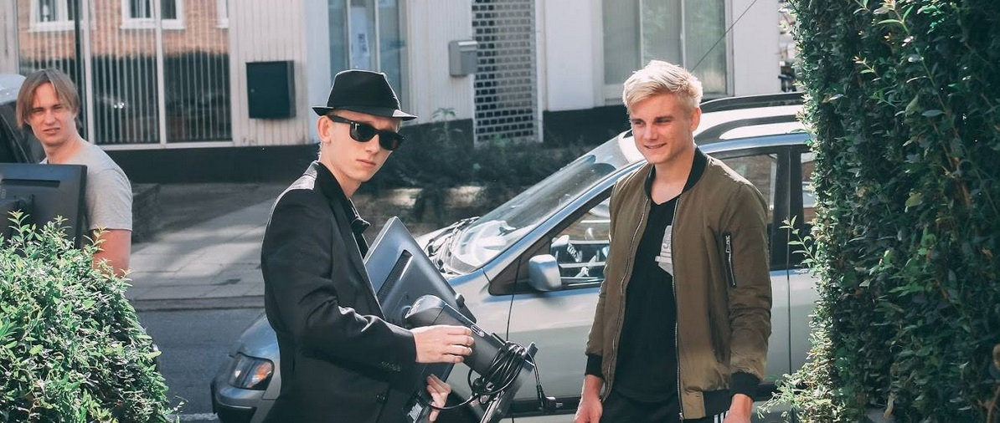
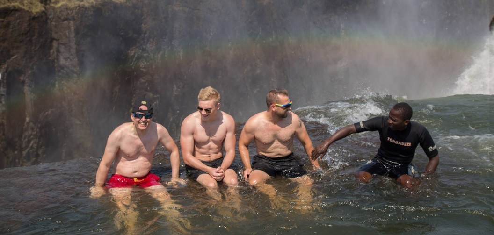

Hej! Velkommen til fredags-hjemmesiden
Sniff Snaff
Fredes side
Her er en flot fyr ved navn Frederik <3
Her er Frederik på vej til sport. Han går til CS-GO, det er herre nice, siger han!

Her er Frederik i udendørs sauna med mandeklubben
